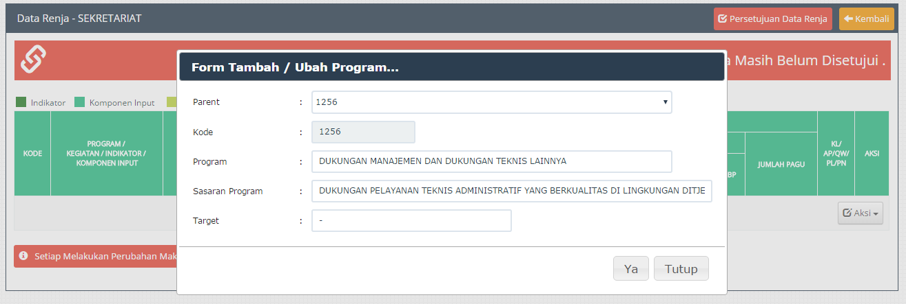
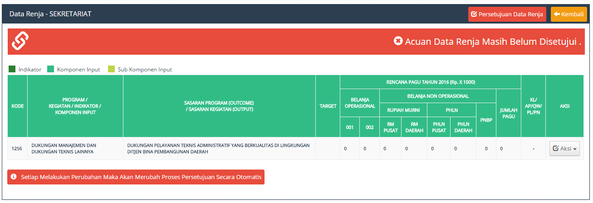

Menambah Program Dilakukan Guna Mengisi Data Selanjutnya sseperti Indikator , Komponen Input dan Sub Komponen Input, Karena program merupakan data paling atas dalam Data Renja Tersebut.
1. Menambah Data Program
1. Klik Menu "Aksi".
2. Klik Menu "Tambah Program"

Gambar Pengisian Data Program
3. Isi "Kolom" yang telah disediakan.
4. Tekan Tombol "Ya" Untuk Melakukan Peyimpanan Data.
5. Data "Program" Berhasil Disimpan.

Gambar Notikasi Proses Penyimpanan
6. Bila Proses Penyimpanan Berhasil Maka Data Program Akan Muncul Pada Data Renja.

Gambar Proses Penyimpanan Data
Created with the Personal Edition of HelpNDoc: Write EPub books for the iPad